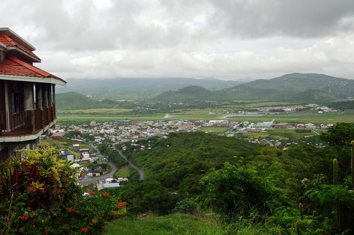

Saint Lucia: Connected to Global Markets
As a member of CARICOM, OECS, the Commonwealth, and the WTO, Saint Lucia benefits from an extensive network of preferential trade agreements providing duty-free or reduced-tariff access to the European Union (500+ million consumers), the United States (330+ million), Canada (40+ million), and the entire Caribbean Community (18+ million). Businesses registered in Saint Lucia can access multiple markets under favourable terms.
CARICOM Single Market & Economy (CSME)
▼

The CARICOM Single Market and Economy is the Caribbean Community's framework for economic integration. Saint Lucia joined the CARICOM Single Market (CSM) on 3 July 2006 as part of the second group of six member states. The CSME aims to create a single economic space where goods, services, capital, and skilled labour move freely across 15 member states.
CARICOM Member States
Full Members (15): Antigua & Barbuda, The Bahamas, Barbados, Belize, Dominica, Grenada, Guyana, Haiti, Jamaica, Montserrat, Saint Kitts & Nevis, Saint Lucia, Saint Vincent & the Grenadines, Suriname, Trinidad & Tobago.
Associate Members (5): Anguilla, Bermuda, British Virgin Islands, Cayman Islands, Turks & Caicos Islands.
CARICOM Market Size (2024 GDP)
| Country | GDP (USD) | GDP per Capita |
|---|---|---|
| Trinidad & Tobago | $25.63B | $17,949 |
| Haiti | $25.29B | $2,041 |
| Guyana | $24.66B | $30,962 |
| Jamaica | $21.90B | $7,965 |
| The Bahamas | $15.83B | $38,792 |
| Barbados | $7.17B | $24,648 |
| Suriname | $4.45B | $6,881 |
| Belize | $3.20B | $7,796 |
| Saint Lucia | $2.57B | $14,270 |
| Antigua & Barbuda | $2.21B | $21,326 |
| Grenada | $1.40B | $12,067 |
| St. Vincent & Grenadines | $1.16B | $10,459 |
| St. Kitts & Nevis | $1.08B | $20,989 |
| Dominica | $698M | $9,325 |
| Montserrat | $80M | $18,197 |
| TOTAL | ~$137B | 18M+ population |
Five countries account for 85% of CARICOM GDP: Trinidad & Tobago (24%), Guyana (23%), Jamaica (18%), The Bahamas (13%), and Barbados (7%). Guyana is the fastest-growing economy (10.3% projected 2025, oil/gas driven). Source: IMF/World Bank 2024 estimates.
What the CSME Means for Businesses
| CSME Provision | Benefit for Businesses |
|---|---|
| Free Movement of Goods | Products manufactured in Saint Lucia can be exported duty-free to all CARICOM member states, provided they meet Rules of Origin (CARICOM Invoice Form C23). The Common External Tariff (CET) applies to non-CARICOM imports: 0–5% for non-competing inputs, 5–15% for competing inputs, 10–20% for non-competing finished goods, and 20–40% for competing finished goods. |
| Free Movement of Services | Service providers can offer services across the region without discrimination. This includes professional services, financial services, tourism services, and ICT services. |
| Free Movement of Capital | Investment capital can flow freely between member states. Companies can establish operations, acquire shares, and repatriate profits without exchange control restrictions between CARICOM states. |
| Right of Establishment | CARICOM nationals and businesses have the right to establish a commercial presence in any member state on a non-discriminatory basis. A business registered in Saint Lucia can open branches in any CARICOM country. |
| Free Movement of Skilled Persons | 12 approved categories of skilled workers can work in any CSME-participating state without a work permit (see Free Movement section below). |
| Common External Tariff (CET) | A unified tariff on imports from outside CARICOM protects regional producers while maintaining competitive pricing. Rates range from 0% to 20% depending on the product category. A revised CET was implemented in January 2026, updating tariff schedules to align with CARICOM’s harmonised trade framework and HS 2022 nomenclature. |
CSME Rules of Origin
To qualify for duty-free treatment within CARICOM, products must meet one of three criteria:
- Wholly produced — goods entirely produced from regional materials (agriculture, minerals, fish from CARICOM waters)
- Substantial transformation — imported materials undergo a process resulting in a different tariff heading (HS 4-digit level change)
- Value-added test — for certain products, a minimum 40–60% regional value must be added during production
A CARICOM Invoice (Form C23) certifying origin is required, issued by the Saint Lucia Customs & Excise Department.
OECS Economic Union
▼The Organisation of Eastern Caribbean States (OECS) provides a deeper level of integration beyond CARICOM. The 2010 Revised Treaty of Basseterre established the OECS Economic Union, creating a unified financial and economic space with even fewer barriers than the broader CSME.
OECS Protocol Members
Full Protocol Members (7): Antigua & Barbuda, Dominica, Grenada, Montserrat, Saint Kitts & Nevis, Saint Lucia, Saint Vincent & the Grenadines.
Associate Members: Anguilla, British Virgin Islands, Martinique, Guadeloupe, Saint Martin.
Key Benefits of OECS Economic Union
Single Currency
All OECS protocol members share the Eastern Caribbean Dollar (XCD), pegged at XCD 2.70 = USD 1.00. No currency conversion costs when trading within the OECS.
Free Movement of People
OECS citizens enjoy automatic right of entry and stay in any member state. No immigration restrictions for nationals travelling within the Economic Union.
Free Movement of Goods
All goods originating in OECS member states move freely without tariffs, quotas, or non-tariff barriers. Simplified customs procedures apply.
Common Regulatory Framework
Harmonised business regulations, standards, and investment policies. The Eastern Caribbean Supreme Court provides a unified judicial system for commercial disputes.
OECS vs. CSME: Deeper Integration
| Feature | CSME (15 states) | OECS Economic Union (7 states) |
|---|---|---|
| Free movement of persons | 12 skilled categories only | All citizens — indefinite stay with government-issued photo ID |
| Currency | Multiple currencies | Shared XCD (ECCB-managed, pegged to USD) |
| Customs | Common External Tariff | Full customs union with harmonised internal procedures |
| Tax harmonisation | Limited | Harmonised monetary and tax policies |
| Contingent rights | Limited | Access to education, healthcare, social safety nets in any member state |
| Judicial system | Various | Eastern Caribbean Supreme Court (unified) |
OECS Commission Headquartered in Castries
Saint Lucia hosts the OECS Commission headquarters in Castries, giving businesses direct institutional access. The OECS Blue Economy initiative provides eligible MSMEs in Grenada, Saint Lucia, and St. Vincent access to USD $5,000–$25,000 in matching grants. The OECS Skills and Innovation Project launching in 2026 will provide additional training and grant funding.
Free Circulation of Goods Regime
The OECS is operationalising a Free Circulation of Goods regime under Article 10 of the Protocol of the Eastern Caribbean Economic Union (Revised Treaty of Basseterre, 2010). This framework goes beyond CARICOM’s duty-free provisions by eliminating all import formalities — not just tariffs — on goods traded between the seven Protocol Member States.
OECS Free Circulation vs. CARICOM Duty-Free
| Feature | CARICOM Duty-Free | OECS Free Circulation |
|---|---|---|
| Import tariffs | Eliminated (0% CET) | Eliminated (0%) |
| Customs declarations | Required (Form C23) | Eliminated for intra-OECS trade |
| Rules of origin checks | Required at border | Eliminated for OECS-origin goods |
| Non-tariff barriers | Some remain | Harmonised & eliminated |
| Border regulatory procedures | Vary by country | Harmonised across all 7 states |
| Third-country goods | CET applies at first entry | Once duties paid at any OECS port, goods circulate freely as “domestic” within all 7 states |
What Free Circulation Means for Importers
Under free circulation, goods imported from outside the region that clear customs at any OECS port are treated as domestic goods throughout the Economic Union. A container of electronics cleared through Port Castries in Saint Lucia can be re-shipped to Dominica, Grenada, or St. Kitts without additional customs declarations, duties, or border checks. This makes Saint Lucia a viable regional distribution hub for businesses serving the Eastern Caribbean.
OECS Customs Union Progress
| Milestone | Status | Details |
|---|---|---|
| Free Circulation of Goods Bills | In Progress | Legislation being adopted by Protocol Member States to operationalise the customs union under the Revised Treaty of Basseterre |
| Regional Working Group | Active | First Regional Working Group convened to discuss procedural requirements for the customs union and free circulation regime |
| Port Readiness Programme | Ongoing | OECS ports preparing systems and staff for free circulation; harmonisation of border and SPS procedures underway |
| Harmonised Border Procedures | In Progress | Regulatory procedures for third-country imports being harmonised across all seven Protocol Member States |
| OECS RIGHT Programme | Active | Regional Integration and Growth through Harmonisation and Technology programme accelerating customs union implementation |
Business Impact of the OECS Customs Union
The OECS Customs Union is projected to increase intra-OECS trade by 12% by 2030 through reduced trade costs and expanded market access. For businesses in Saint Lucia, this means access to a combined OECS market of approximately EC$26 billion (~US$9.6B) in GDP and 620,000+ consumers across seven island economies — all using the same EC dollar, governed by the same judicial system, and with zero customs barriers. Companies can achieve economies of scale unattainable on a single small island.
Intra-OECS Trade Profile
| OECS Partner | GDP (USD) | Population | Key Trade Products |
|---|---|---|---|
| Antigua & Barbuda | $2.21B | ~100,000 | Tourism services, manufactures, food |
| Dominica | $698M | ~72,000 | Soap/toiletries, spring water, produce |
| Grenada | $1.40B | ~125,000 | Spices (nutmeg, mace), cocoa, fish |
| Montserrat | $80M | ~5,000 | Limited trade volume; reconstruction |
| St. Kitts & Nevis | $1.08B | ~48,000 | Electronics, beverages, manufactures |
| Saint Lucia | $2.57B | ~173,000 | Beer, paper products, hot sauces, gravel |
| St. Vincent & Grenadines | $1.16B | ~104,000 | Arrowroot, flour, rice, dasheen |
| OECS Total | ~$9.2B | ~627,000 | Single currency, single judicial system |
Intra-CARICOM trade represents only ~15% of total regional trade. The OECS Customs Union aims to substantially increase this for the Eastern Caribbean sub-region. Sources: IMF/World Bank 2024; OECS Commission.
CARIFORUM-EU Economic Partnership Agreement (EPA)
▼The CARIFORUM-EU EPA, signed in October 2008, is a comprehensive free trade agreement between the European Union and 15 Caribbean states (14 CARICOM members plus the Dominican Republic). It is the most far-reaching trade agreement available to Saint Lucian businesses.
EPA at a Glance
| Feature | Details |
|---|---|
| Market Access | Duty-free, quota-free access to the EU market for virtually all goods originating in CARIFORUM states, including Saint Lucia |
| EU Market Size | 27 member states, 450+ million consumers, GDP of approximately EUR 16 trillion |
| Total EU-CARIFORUM Trade (2024) | EUR 20.1 billion (92% of all EU-Caribbean trade). Goods: EUR 16 billion; Services: EUR 17.5 billion (2023) |
| Services Coverage | Opens EU market for Caribbean service providers in tourism, entertainment, professional services, environmental services, and more |
| Investment Provisions | Protections for EU and CARIFORUM investors, including national treatment and most-favoured-nation treatment |
| Key Exports to EU | Bananas, rum, cocoa, tobacco, chemicals, medical instruments, crude oils, LNG |
Benefits for Saint Lucian Exporters
- Duty-free access for agricultural products including bananas, cocoa, rum, tropical fruits, and sea moss
- No quotas on most product categories entering the EU market
- Cumulation provisions allow combining inputs from other CARIFORUM states, the EU, or other ACP countries to meet Rules of Origin
- Services market access for tourism operators, creative industries professionals, and other service providers
- Asymmetric liberalisation — CARIFORUM countries have longer transition periods (up to 25 years) to open their markets to EU goods
- Development cooperation provisions including EU funding for trade capacity building
EPA Certificate of Origin
To benefit from EPA preferential tariffs when exporting to the EU, goods must be accompanied by an EUR.1 Movement Certificate or an invoice declaration for consignments valued under EUR 6,000. The certificate is issued by the Saint Lucia Customs & Excise Department and confirms that the goods meet CARIFORUM-EU Rules of Origin.
EU-CARIFORUM EPA: 15+ Years of Implementation
EPA Trade Performance (2008–2024)
| Metric | Data |
|---|---|
| Total EU-CARIFORUM trade (2024) | EUR 22.1 billion (more than doubled since 2014) |
| EU-CARIFORUM goods trade (2022) | EUR 19.8 billion (Caribbean exports: EUR 12B; imports: EUR 7.8B) |
| EU-CARIFORUM services trade (2023) | EUR 17.5 billion (CARIFORUM exports ~EUR 59.7B pre-COVID peak) |
| EPA covers | 92% of all EU-Caribbean trade |
| EU market opening | 100% — all CARIFORUM goods enter duty-free and quota-free since 2009 |
| CARIFORUM market opening | ~61% — asymmetric liberalisation with 25-year transition (2008–2033) |
| Excluded from CARIFORUM liberalisation | Fish, meats, fruits, dairy, rum, and other sensitive products |
| Main CARIFORUM exports to EU | Crude oils, LNG, chemicals, medical instruments, bananas, rum, cocoa, tobacco |
EPA Implementation Challenges
After 15+ years, the EPA has been more successful at opening the EU market to Caribbean goods than at increasing Caribbean export volumes. Global economic shocks (2008 financial crisis, COVID-19, Ukraine war) and resource constraints have limited implementation. Caribbean governments have shown goodwill toward their EPA commitments but utilisation rates of EPA preferences by small exporters remain low. The EPA Implementation Unit within CARICOM and EU-funded capacity building programmes aim to improve utilisation. Saint Lucian businesses should contact Export Saint Lucia (TEPA) for assistance navigating EPA requirements.
CARIFORUM-UK EPA (Post-Brexit)
| Feature | Details |
|---|---|
| Status | Provisionally applied since 1 January 2021 |
| Coverage | Mirrors EU EPA: duty-free, quota-free access for all CARIFORUM goods entering the UK market (67+ million consumers) |
| UK market size | GDP ~USD $3.1 trillion; UK is CARIFORUM’s fourth-largest trade partner |
| Services | Mirrors EU EPA services provisions, including entertainment and creative arts professionals |
| Saint Lucia-UK trade | Historical banana trade; Geest Line provides weekly direct shipping from Portsmouth (10-day transit) |
| Certificate required | EUR.1 Movement Certificate or origin statement for preferential entry |
Caribbean Basin Trade Partnership Act (CBTPA) — United States
▼The CBTPA, enacted in 2000 as an enhancement to the original Caribbean Basin Initiative (CBI/CBERA), provides Saint Lucian goods with preferential duty-free access to the United States market. The programme is currently authorised through 30 September 2030.
CBTPA Key Features
| Feature | Details |
|---|---|
| Status | Active — Saint Lucia is a designated beneficiary country |
| Validity | Through 30 September 2030 |
| Coverage | Duty-free and quota-free access for most manufactured goods, agricultural products, and select textiles/apparel |
| Eligible Products | Nearly 270 non-textile tariff items including footwear, tuna, leather goods, travel goods, watches; plus textile and apparel products meeting specific criteria |
| US-Saint Lucia Trade (2025) | USD $673.67 million through July 2025 (up 4.12% year-on-year) |
| Documentation | CBTPA Certificate of Origin required at time of import claim to US Customs and Border Protection |
What Saint Lucia Exports to the US (Top Categories, 2025)
- Returned exports (re-exports)
- Sauces and mixed condiments
- Tequila and other spirits/liquors
- Aircraft engines and parts
- Seaweed, sugar beets, and sugar cane products
What Saint Lucia Imports from the US (Top Categories, 2025)
- Gasoline and other fuels
- Low-value commercial shipments
- Chicken and other poultry
- Computers and electronics
- Cell phones and related equipment
CBERA vs. CBTPA
The Caribbean Basin Economic Recovery Act (CBERA), enacted in 1983, provides the foundational framework. The CBTPA (2000) expanded these benefits to include textile and apparel products, among other enhancements. Both programmes run concurrently, with CBTPA providing additional product coverage beyond CBERA.
CARIBCAN — Canada
▼CARIBCAN (officially the Commonwealth Caribbean Countries Tariff, or CCCT) is Canada's non-reciprocal trade preference programme for 18 Commonwealth Caribbean countries, including Saint Lucia. Established in 1986 under Canada's Customs Tariff Act, it provides duty-free access for most Caribbean exports entering the Canadian market.
| Feature | Details |
|---|---|
| Programme | Commonwealth Caribbean Countries Tariff (CCCT / CARIBCAN) |
| Nature | Non-reciprocal (one-way preference from Canada to Caribbean) |
| Coverage | Duty-free access for most goods originating in beneficiary Caribbean countries |
| 2025 Expansion | As of 1 January 2025, textiles and apparel products are now included under CCCT preferences |
| Canadian Imports from CARIBCAN (2024) | CAD $1.8 billion from all beneficiary countries |
| Key Products | Rum, sugar, tropical fruits, cocoa, spices, manufactured goods, apparel (from 2025) |
Canada-CARICOM Relationship Deepening
Following the 2023 Canada-CARICOM Summit, Canada announced CAD $39.2 million in new development assistance for the region. Negotiations toward a comprehensive Canada-CARICOM Free Trade Agreement are ongoing, which would replace CARIBCAN with a more permanent and broader framework covering services, investment, and government procurement.
Other Trade Agreements & Frameworks
▼| Agreement | Partners | Status | Key Provisions |
|---|---|---|---|
| CARICOM-Dominican Republic FTA | CARICOM + Dominican Republic | Active | Preferential tariff reductions on goods trade between CARICOM states and the Dominican Republic |
| CARICOM-Costa Rica FTA | CARICOM + Costa Rica | Active | Reciprocal preferential tariffs on select goods; cooperation in trade facilitation |
| CARICOM-Cuba Trade & Economic Cooperation | CARICOM + Cuba | Active | Preferential tariffs on select goods; cooperation in health, education, and technical assistance |
| CARICOM-Colombia Agreement | CARICOM + Colombia | Active | Reciprocal preferential market access for goods; technical cooperation |
| CARICOM-Venezuela Agreement | CARICOM + Venezuela | Limited | Preferential access; historically included PetroCaribe energy cooperation programme |
| WTO Membership | 164 WTO Members | Active | MFN treatment; bound tariff rates; access to WTO dispute settlement mechanism |
Taiwan (Republic of China) — Bilateral Cooperation
Saint Lucia–Taiwan Partnership
Saint Lucia is one of a small number of countries worldwide that maintains full diplomatic relations with Taiwan (Republic of China). This relationship provides unique trade, technical cooperation, and grant funding benefits not available through the PRC.
| Programme | Details |
|---|---|
| Annual Trade Showcase | The 18th Saint Lucia–Taiwan Trade Showcase (November 2025) linked 65 local businesses with 25 Taiwanese companies, covering food products, robotics, digital services, clean energy technology, and consumer goods |
| Technical Cooperation | Taiwanese technical teams collaborate with Saint Lucian professionals in agriculture (aquaponics, hydroponics), carnival costume engineering, souvenir/craft development, and ICT training |
| Grant Funding | Taiwan committed US$5.6 million across six community development projects including agriculture, infrastructure, and social services |
| Agricultural Programme | Taiwan-funded aquaponics training (50 persons trained, 2023); collaboration on hydroponics centre with Guyana |
| Mutual Legal Assistance | Bilateral agreement on mutual assistance in criminal matters signed August 2023 |
| Scholarship Programme | Taiwan ICDF scholarships for Saint Lucian students to study at Taiwanese universities |
Trade Implications of the Taiwan Relationship
While Taiwan-Saint Lucia bilateral trade volumes are modest compared to US or CARICOM trade, the relationship provides access to Taiwanese technology, manufacturing expertise, and development financing that larger Caribbean states aligned with the PRC do not receive. Taiwanese companies participating in the annual Trade Showcase offer potential for joint ventures, technology transfer, and supply chain partnerships in clean energy, agriculture technology, digital services, and light manufacturing. The Taiwan Embassy in Castries facilitates business matchmaking.
Other Bilateral & Regional Frameworks
| Framework | Partners | Key Benefits for Saint Lucia |
|---|---|---|
| PetroCaribe | Venezuela + Caribbean states | Historically provided oil at preferential financing terms (40% deferred at 1% interest over 25 years). Programme effectively suspended since 2019 due to Venezuela’s economic crisis |
| ACS (Association of Caribbean States) | 25 Caribbean Basin states | Trade, tourism, and transport cooperation in the wider Caribbean Basin including Central America, Mexico, Colombia, Venezuela |
| Commonwealth Preference | 56 Commonwealth nations | No formal trade preference, but facilitates business networking, institutional cooperation, and capacity building through the Commonwealth Enterprise & Investment Council |
| EU-OCT Association | Nearby French OCTs (Martinique, Guadeloupe) | Martinique (35 km north) and Guadeloupe are EU Outermost Regions. OECS associate membership facilitates some cooperation, but they operate under EU customs rules, not CARICOM CET |
| ALBA (observer status) | Venezuela, Cuba, others | Saint Lucia has participated in ALBA cooperation mechanisms but is not a full member; limited trade impact |
Saint Lucia's Exports & Imports
▼Main Exports
Total Exports: ~USD $67.4 million (goods)
Traditional Exports
- Bananas (declining but still significant)
- Cocoa beans and cocoa products
- Coconut oil and copra
- Tropical fruits and vegetables
Growing Exports
- Sea moss (leading agricultural export)
- Rum and beverages
- Sauces and condiments (e.g., hot sauces)
- Coffee and honey
Manufactured Exports
- Electronic components
- Paper and cardboard products
- Construction materials
- Apparel
Main Imports
Total Imports: ~USD $532.9 million (goods)
Fuel & Energy
- Petroleum products and gasoline
- Diesel and lubricants
Food & Beverages
- Poultry and meat products
- Dairy products
- Cereals and processed foods
Manufactured Goods
- Vehicles and automotive parts
- Computers and electronics
- Cell phones and telecom equipment
- Building materials (cement, steel)
Other
- Pharmaceuticals
- Machinery and industrial equipment
Trade Deficit
Saint Lucia runs a structural trade deficit of approximately USD $465 million in goods. This is offset significantly by services exports, particularly tourism, which accounts for roughly 65% of GDP. The island receives over 900,000 visitors annually, generating substantial foreign exchange earnings that more than compensate for the merchandise trade gap.
Detailed Merchandise Trade Statistics
Trade Summary (Latest Available Data)
| Indicator | Value (US$) | Value (EC$) | Notes |
|---|---|---|---|
| Total merchandise exports (FOB) | $67.4M | EC$182.0M | Goods only; excludes services |
| Total merchandise imports (CIF) | $532.9M | EC$1,438.8M | CIF basis as assessed by Customs |
| Merchandise trade deficit | −$465.5M | −EC$1,256.8M | Structural; offset by tourism/services |
| Services exports (estimated) | ~$1,100M | ~EC$2,970M | Tourism dominates (~65% of GDP) |
| Current account (goods + services) | Positive | — | Services surplus compensates goods deficit |
| US-Saint Lucia bilateral trade (2024) | $1,044.2M | EC$2,819.3M | US exports $1,037.3M; SLU exports to US $6.9M |
| Trade openness ratio | Trade in goods = ~23% of GDP; trade in goods & services = ~120% of GDP (highly open economy) | ||
Sources: OEC/WITS trade data; US Census Bureau Foreign Trade Division (2024); ECCB; Central Statistical Office of Saint Lucia. Services export figure is estimated based on tourism receipts.
Imports by Source Country
| Source Country / Region | Share of Imports | Est. Value (US$) | Main Products |
|---|---|---|---|
| United States | 39.8% | ~$212M | Petroleum, poultry, electronics, vehicles, machinery |
| Trinidad & Tobago | 14.1% | ~$75M | Petroleum products, food, cement, chemicals, beverages |
| European Union | ~8% | ~$43M | Machinery, vehicles, pharmaceuticals, consumer goods |
| United Kingdom | ~5% | ~$27M | Manufactured goods, machinery, food products |
| China | ~4% | ~$21M | Electronics, textiles, manufactured goods, building materials |
| Barbados | ~3% | ~$16M | Manufactured goods, food, beverages |
| Japan | ~3% | ~$16M | Vehicles, electronics, machinery |
| Other CARICOM | ~5% | ~$27M | Food products, manufactures, agricultural goods |
| Rest of World | ~18% | ~$96M | Various (Canada, Brazil, Colombia, others) |
Exports by Destination
| Destination | Value (US$) | Key Export Products |
|---|---|---|
| United States | $9.2M | Sauces/condiments, spirits, aircraft parts, re-exports |
| Guyana | $8.7M | Manufactured goods, food products, paper containers |
| Trinidad & Tobago | $7.6M | Paper products, beverages, manufactures |
| Barbados | $4.7M | Beer (Piton), gravel, food products |
| Suriname | $3.7M | Manufactured goods, food, beverages |
| Dominica | $2.8M | Beverages, manufactures, food |
| St. Vincent & Grenadines | $2.1M | Paper products, beverages, manufactures |
| European Union | ~$2.0M | Bananas, cocoa, rum, tropical fruits |
| Other destinations | ~$26.6M | UK, Canada, other CARICOM, other |
| Total | ~$67.4M | 4 of top 5 destinations are CARICOM states |
Export Concentration Risk
Saint Lucia’s top 5 exports (beer, gravel, paper containers, refined petroleum, and rum) account for approximately 47% of total merchandise exports. The economy’s reliance on a narrow goods export base makes diversification a national priority. Growing product categories include sea moss (now requiring export certification under SLNS 145:2023), hot sauces (Baron Foods exports 150+ products to 35+ countries), and cocoa products.
CARICOM Dominance in Exports
CARICOM states collectively receive over 50% of Saint Lucia’s merchandise exports by value. Guyana, Trinidad & Tobago, Barbados, Suriname, and Dominica are all top-10 destinations. This underscores the critical importance of CSME and OECS Economic Union integration for Saint Lucian manufacturers and the potential gains from the OECS Free Circulation of Goods regime.
Sources: OEC (Observatory of Economic Complexity) 2022 data; US Census Bureau bilateral trade 2024; WITS/World Bank. Saint Lucia’s detailed annual trade data is published by the Central Statistical Office at stats.gov.lc.
Main Trading Partners
▼| Partner | Direction | Key Products | Trade Framework |
|---|---|---|---|
| United States | Export & Import | Fuels, food, electronics (imports); sauces, spirits, re-exports (exports) | CBERA / CBTPA |
| CARICOM States | Export & Import | Manufactured goods, food, beverages, building materials | CSME / OECS Economic Union |
| European Union | Export & Import | Bananas, cocoa, rum (exports); machinery, vehicles, consumer goods (imports) | CARIFORUM-EU EPA |
| United Kingdom | Export & Import | Bananas, cocoa, rum (exports); manufactured goods (imports) | CARIFORUM-UK EPA (post-Brexit continuation) |
| Canada | Export & Import | Rum, tropical fruits, spices (exports); food, machinery (imports) | CARIBCAN / CCCT |
| Trinidad & Tobago | Mainly Import | Petroleum products, food, building materials, consumer goods | CSME (intra-CARICOM) |
| Barbados | Export & Import | Manufactured goods, food products, beverages | CSME / OECS |
| Guyana | Export | Manufactured goods, food products | CSME |
Food Import Dependency & Food Security
▼Saint Lucia imports an estimated 80–90% of its food, making it one of the most import-dependent nations in the Caribbean. The food import bill reached EC$1.5 billion (~US$556M) in 2023, representing 27.64% of total merchandise imports. Reducing this dependency is a national strategic priority.
Food Import Profile
Top Import Categories (% of Food Import Bill)
| Category | Share | Key Items |
|---|---|---|
| Fats & oils | 31.3% | Cooking oils, margarine, shortening |
| Dairy & eggs | 17.9% | Cheese, milk, butter (eggs self-sufficient locally) |
| Meat & seafood | 16.5% | Chicken, pork, processed meats |
| Staples & cereals | 15.4% | Rice, flour, pasta, bread |
| Sugar & honey | 15.2% | Refined sugar, confectionery, sweeteners |
| Fruits & vegetables | 10.7% | Processed fruit juices, fresh produce not grown locally |
Source countries: USA (primary), Trinidad & Tobago, United Kingdom, Jamaica, Barbados, France. The CARICOM “25 by 2025” target to reduce the regional food import bill by 25% was not met and has been extended to 2030.
Local Agricultural Production
| Agriculture as % of GDP | <3% (but accounts for ~20% of employment) |
| Agricultural land use | ~18% of total land; most farms under 5 acres |
| Self-sufficient products | Eggs (only product with full local self-sufficiency) |
| 7 priority import substitution crops | Cabbage, tomato, lettuce, sweet pepper, watermelon, cantaloupe, pineapple |
| Other local crops | Cocoa, coconut, breadfruit, root crops, bananas, sea moss (growing export) |
| Local poultry target | 35–40% of consumption (currently mostly imported) |
Food Processing Industry
| Company | Location | Products/Notes |
|---|---|---|
| Baron Foods Ltd | Vieux Fort | 150+ products, FSSC 22000 certified, exports to US/Canada/Europe/Caribbean. Saint Lucia’s largest food manufacturer. |
| Windward & Leeward Brewery | — | Produces Piton Beer (Heineken-affiliated); iconic national brand |
| Viking Traders | Est. 1979 | 100+ award-winning Caribbean food products |
| Winfresh | Govt-owned | Pepper sauces and agro-processing |
Industrial capacity: 7 industrial estates offer factory shells ranging from 370 to 2,970 m² for food processing and manufacturing operations.
Supermarket Chains & Grocery Costs
Major Retailers
| Massy Stores | 13 locations (largest chain; acquired Super J IGA in 2016) |
| Consolidated Foods Limited (CFL) | Wholesale and retail distribution |
| Cost-U-Less | Warehouse model (US-style bulk buying) |
| Others | Glace, Shoprite, Marketplace SLU |
Grocery Cost Estimates (2026)
| Item | Cost |
|---|---|
| Bananas (local) | EC$2.21/lb |
| Eggs (local, per dozen) | EC$11.32 |
| Imported goods premium | 30–50% more than North American prices |
| Monthly grocery (single, budget) | US$350–500 |
| Monthly grocery (family of 4, budget) | US$900–1,250 |
Food Security Strategy (2025–2030)
The government has established a National Food & Nutrition Security Task Force with a 3-year Strategic Plan to boost domestic food production and reduce import dependency:
| Initiative | Details |
|---|---|
| National Meat Processing Facility | Under design — will enable local processing of poultry and pork |
| Hydroponics Centre | SLU-Guyana collaboration; uses 95% less water than traditional farming |
| Aquaponics Programme | 50 persons trained (2023, Taiwanese partnership) |
| FISH-ADAPT | US$16.7M (FAO/GCF) for climate-resilient fisheries |
| Ministry portfolio | Agriculture, Fisheries, Food Security & Climate Change (expanded post-2025 election) |
COVID & Supply Chain Impact
Food prices have risen steadily since 2020, with all import categories seeing 8–31% price increases. The SLU food import bill reduction target was missed. Government now prioritizes extensive local farming, import substitution of the 7 priority crops, and food sovereignty through the strategic plan.
Investment Opportunities in Food Security
The food import dependency creates significant business opportunities: hydroponics and vertical farming, agro-processing (cocoa, hot sauce, coconut products), cold chain and food logistics, poultry and livestock farming (targeting the 35–40% local supply goal), and farm-to-table supply chain platforms. Baron Foods demonstrates the export potential — from a local hot sauce maker to 150+ products in 35+ countries. See Key Sectors for agriculture investment details and Startups for agri-tech opportunities.
Customs Procedures & Trade Documentation
▼
ASYCUDA World System
Saint Lucia's Customs & Excise Department uses ASYCUDA World (Automated System for Customs Data), developed by UNCTAD, as its integrated customs management platform. All import/export declarations, duty calculations, and clearance processes are handled electronically through ASYCUDA World. The system was upgraded in 2024 with enhanced features and an online help desk portal accessible at customs.gov.lc.
Key ASYCUDA Features
- Online duty calculator — available at asycuda.customs.gov.lc for estimating import costs
- Electronic manifest submission — Electronic Management Manifest ASYCUDA (EMMA) allows advance cargo information submission
- Digital certificate uploads — since September 2024, upload of certificates of origin is mandatory through the system
- Online tariff lookup — full HS code search and tariff classification available online
- Help desk portal — ASYCUDA-related support available through the department website
Import Declaration Process
All commercial imports into Saint Lucia must clear through the Customs & Excise Department. The process involves document submission via ASYCUDA World, goods inspection, duty assessment, and payment before release.
Import Clearance Steps
- Register with Customs — Obtain a Taxpayer Identification Number (TIN) from the Inland Revenue Department and register with the Customs & Excise Department
- Engage a customs broker — Licensed customs brokers handle most commercial clearances on behalf of importers
- Submit declaration via ASYCUDA World — The Customs Declaration (Form C75) is submitted electronically along with all supporting documents
- Duty assessment — Customs assesses duties and taxes based on CIF (Cost, Insurance, and Freight) value using the CARICOM Harmonized System tariff classification
- Payment — Import duty, VAT, excise tax, service charge, environmental levy, and Health & Citizen Security Levy are paid
- Inspection — Physical or documentary inspection as determined by risk assessment
- Release — Goods are released from the port or airport after clearance confirmation
Documents Required for Importing
| Document | Purpose | Issued By |
|---|---|---|
| Commercial Invoice | Declares value, description, and terms of sale of goods | Exporting seller |
| Bill of Lading / Airway Bill | Shipping contract and receipt of goods by carrier | Shipping line / airline |
| Customs Declaration (C75) | Formal declaration to Customs via ASYCUDA World for assessment of duties and taxes | Importer / customs broker |
| Import Licence | Required for restricted goods (firearms, certain textiles, chemicals, plastic bags); valid for 1 month from date of issue | Ministry of Commerce |
| Certificate of Origin | To claim preferential tariff rates under CARICOM (Form C23), EPA (EUR.1), CBTPA, etc. Mandatory upload via ASYCUDA since Sept 2024 | Exporting country authority |
| Phytosanitary Certificate | For plant products; certifies absence of pests and diseases | Exporting country plant health authority |
| Health Certificate | For food and animal products | Exporting country health authority |
| Veterinary Import Permit | For live animals and animal products | Veterinary Service, Ministry of Agriculture |
| Packing List | Itemised list of contents, weights, and package markings | Exporting seller |
| CARICOM Invoice | Required for shipments from CARICOM countries claiming duty-free treatment | Exporting seller in CARICOM |
De Minimis Threshold
Saint Lucia has no de minimis threshold for duty and tax on imports. All imports, regardless of value, are subject to applicable duties and taxes. There are no exemptions based solely on shipment value.
Export Procedures
The Trade Export Promotion Agency (TEPA / Export Saint Lucia), established through Act #16 of 2013, is the lead agency for export development. TEPA provides export counselling, market access support, product branding assistance, and training.
Documents Required for Exporting
- Commercial Invoice — Description, quantity, and value of goods
- Certificate of Origin — CARICOM (Form C23), EUR.1 (for EU), or general certificate as required by destination
- Pro Forma Invoice — Required for some destinations prior to shipment
- Export Licence — Required for certain regulated products
- Phytosanitary Certificate — For plant-based products, issued by the Ministry of Agriculture after inspection
- Sea Moss Export Certificate — Mandatory for sea moss exports (since 2024); requires HACCP certification, facility inspection by Export Saint Lucia, and compliance with SLNS 145:2023 food safety standards
- Bill of Lading / Airway Bill — Transport document issued by carrier
- Export Packing List — Detailed contents of each package
- CBTPA Certificate of Origin — Specifically for preferential entry into the US market
- HS Code Classification — 6-digit Harmonized System product code required for all exports
Export contact: Export Saint Lucia (TEPA) — +1 (758) 468-2145, exportsaintlucia.org
Export Prohibitions & Restrictions
- Agricultural and food products (require phytosanitary/health certification)
- Cultural artefacts and historical objects
- Drugs, narcotics, and weapons
- Counterfeit goods
- CITES-protected species and products
Important: Customs Compliance
Saint Lucia Customs is strict about documentation accuracy. Inaccurate or incomplete paperwork can result in cargo holds, delays, and financial penalties. Businesses are strongly advised to engage a licensed customs broker for commercial shipments. All importers must register with the Customs & Excise Department and obtain a Taxpayer Identification Number (TIN) from the Inland Revenue Department.
Tariff Schedule & Duty Rates
▼Saint Lucia applies the CARICOM Common External Tariff (CET) to imports from non-CARICOM countries. Duties are calculated on the CIF (Cost, Insurance, and Freight) value of imported goods. According to the WTO, Saint Lucia's simple average MFN applied tariff is 9.2%, with 41.8% of tariff lines receiving duty-free treatment. The tariff classification system is based on the 2017 sixth edition Harmonized Commodity Description and Coding System (HS).
Taxes & Levies on All Imports
| Tax / Levy | Rate | Base | Notes |
|---|---|---|---|
| Import Duty (CET) | 0% – 20% | CIF value | Varies by product category under CARICOM CET; up to 40% on select competing finished goods |
| Customs Service Charge | 5% – 6% | CIF value | Standard 5%; 6% on concession items; payable on all imports |
| Value Added Tax (VAT) | 12.5% | CIF + duty + excise | Standard rate; 0% on zero-rated items; exempt items not charged |
| Health & Citizen Security Levy | 2.5% | CIF value | Introduced 2 August 2023; collected by Customs on imports. Not applied to VAT zero-rated or exempt goods |
| Environmental Protection Levy | 1.5% | CIF value | Ad valorem on imported goods |
| Excise Tax | Varies | Specific / ad valorem | Applied to alcohol, tobacco, fuel, and motor vehicles (see Excise section) |
Total Effective Import Cost
A typical import into Saint Lucia incurs: Import Duty (0–20%) + Service Charge (5–6%) + Environmental Levy (1.5%) + HCSL (2.5%) + VAT (12.5%). For a standard-rated product with 20% CET duty, the effective tax burden on the CIF value can exceed 45%. Excise goods (alcohol, tobacco, vehicles) face significantly higher total charges.
CET Duty Rates by Product Category
| Product Category | CET Import Duty | Notes |
|---|---|---|
| Non-competing raw materials / inputs | 0% – 5% | Items not produced in CARICOM |
| Competing inputs & semi-finished goods | 5% – 15% | Items that compete with CARICOM production |
| Non-competing finished goods | 10% – 20% | Finished products not made in CARICOM |
| Competing finished goods | 20% – 40% | Finished products that compete with CARICOM production |
| Motor vehicles (passenger cars) | 35% | Plus excise tax by engine size (see below) |
| Electronics & cameras | 15% | Computers, phones, cameras, AV equipment |
| Machinery & industrial equipment | 0% – 5% | Lower rates to support production; manufacturing equipment often duty-free under concessions |
| Building materials | 5% – 20% | Cement, steel, lumber, plywood, roofing. VAT waiver on select building materials extended to May 2026 |
| Food & agricultural products | 5% – 40% | Basic foods generally lower; competing agricultural products (meat, dairy) higher |
| Textiles & garments | 20% | Certain garments also require import licence from Ministry of Commerce |
| Pharmaceuticals | 0% – 5% | Essential medicines typically zero-rated or low duty |
| Alcohol & tobacco | 20% + excise | High combined duty burden; see excise rates below |
Sources: CARICOM Revised CET; Saint Lucia Customs Duties Act, Schedule 4; WTO Tariff Profile 2024. Use the official ASYCUDA Duty Calculator for exact rates on specific HS codes.
Preferential Tariff Rates Under Trade Agreements
| Origin | Duty Rate | Framework | Certificate Required |
|---|---|---|---|
| CARICOM member states | 0% | CSME / CARICOM FTA | CARICOM Invoice (Form C23) |
| OECS member states | 0% | OECS Economic Union | Certificate of Origin |
| European Union | Reduced / phased liberalisation | CARIFORUM-EU EPA | EUR.1 Movement Certificate |
| Dominican Republic | Reduced tariffs | CARICOM-DR FTA | Certificate of Origin |
| Costa Rica | Reduced tariffs (select goods) | CARICOM-Costa Rica FTA | Certificate of Origin |
VAT on Imports
▼Value Added Tax at the standard rate of 12.5% is charged on most imported goods. VAT is calculated on the total of CIF value plus import duty plus any excise tax. Businesses registered for VAT (annual turnover exceeding EC$400,000 / ~USD $148,000) can claim input VAT credits on goods imported for business use.
VAT Rates Summary
| Category | VAT Rate | Notes |
|---|---|---|
| Standard rate (most imports) | 12.5% | Default rate for goods and services |
| Hotel accommodation | 7% | Reduced rate since 1 December 2020 |
| Tourism-related services (F&B) | 10% | Restaurants, tours, related tourism services |
| Zero-rated (0%) | 0% | Exports, duty-free goods, fuel, water, electricity, basic food items (70+ items from July 2026) |
| Exempt imports | Not charged | No VAT but no input credit recovery |
Zero-Rated Items (0% VAT)
- Exports of goods and services
- Fuel, water, and electricity
- Duty-free goods
- 70+ food items (zero-rated from 1 July 2026): includes chicken, rice, milk, flour, bread, eggs, sugar, cooking oil, canned fish, baby food, infant formula, and others. Items previously “exempt” were reclassified to “zero-rated” to enable businesses to reclaim input VAT
- Select building materials (VAT waiver extended to May 2026): plywood, lumber, solar systems, and other construction materials
Exempt Items (No VAT, No Input Credits)
- Domestic residential rental
- Educational services
- Financial services (banking, insurance)
- Medical and healthcare services
- Local public transportation
2025–2026 VAT Relief Measures
Effective 1 July 2026, VAT will be eliminated on over 70 food items to reduce the cost of living. Previously exempt food items will be reclassified as zero-rated, which is more beneficial to businesses because they can reclaim VAT paid on inputs used to bring those goods to market. Additionally, the VAT waiver on building materials was extended to May 2026 (originally introduced August 2023). The airport departure charge was halved from EC$68 to EC$34. A VAT-free shopping day was held on 22 December 2025.
VAT on Imported Services
The 2.5% Health & Citizen Security Levy also applies to certain services. The Inland Revenue Department (IRD) collects the levy on services, while Customs collects it on imported goods. Imported services consumed in Saint Lucia are subject to VAT under the reverse charge mechanism where the recipient must account for VAT.
Excise Taxes
▼Excise taxes under the Excise Tax Act (Chapter 15.07) are imposed on four main categories of goods manufactured in or imported into Saint Lucia: fuel, liquor/beer, cigarettes, and motor vehicles. Most excisable goods are taxed at specific rates (per unit/litre) rather than ad valorem.
Alcohol Excise Rates
| Product | Excise Rate (EC$) | Notes |
|---|---|---|
| Beer (glass containers) | $0.94 per litre | Standard rate for most beer |
| Beer (metal containers) | $3.00 per litre | Higher rate for canned beer |
| Beer (19L kegs) | $0.94 per litre | Draught/keg beer |
| Stout (glass) | $0.44 per litre | |
| Stout (metal containers) | $3.00 per litre | |
| Rum (undenatured, strong) | $3.49 per litre | Locally produced and imported rum |
| Brandy (up to 46% ABV) | $15.00 per litre | Bottled brandy |
| Other spirits (grape-based) | $10.00 per litre | Grape wine distillates, marc |
Tobacco Excise
50% Increase Effective 1 July 2023
Saint Lucia increased excise tax on all tobacco products by 50% effective 1 July 2023. This applies to cigarettes and all other tobacco products whether manufactured locally or imported. The increase was part of public health measures and revenue enhancement.
Fuel Excise
Excise tax on fuel is calculated using a formula based on the current price provided by the supplier and the regulated retail price at the pump. The tax is embedded in the pump price paid by consumers. Fuel excise applies at the point of import by wholesalers.
Motor Vehicle Excise & Import Duties
Motor vehicles face the highest combined import charges in Saint Lucia. The standard import duty is 35% on the CIF value, plus excise tax that varies by engine displacement (cc) and vehicle age, plus the standard service charge and VAT.
| Vehicle Type / Engine Size | Import Duty | Excise Tax | Service Charge | VAT |
|---|---|---|---|---|
| Passenger Vehicles | ||||
| Under 1500cc (5+ years old) | 35% | EC$6,000 flat | 6% | 12.5% |
| 1500–2000cc (up to 5 years) | 35% | 17% + EC$4,000 | 6% | 12.5% |
| 1500–2000cc (5+ years) | 35% | 17% + EC$6,000 | 6% | 12.5% |
| Over 2000cc (up to 5 years) | 35% | 25% + EC$4,000 | 6% | 12.5% |
| Over 2000cc (5+ years) | 35% | 25% + EC$6,000 | 6% | 12.5% |
| SUVs & Trucks | ||||
| 1000–1800cc (up to 5 years) | 35% | EC$4,000 flat | 6% | 12.5% |
| 1000–1800cc (5+ years) | 35% | EC$6,000 flat | 6% | 12.5% |
| 2001–3000cc (up to 5 years) | 35% | 46% + EC$4,000 | 6% | 12.5% |
| Over 3000cc (5+ years) | 35% | 56% + EC$6,000 | 6% | 12.5% |
| Electric & Hybrid Vehicles | ||||
| Electric / Hybrid vehicles | 5% | Reduced rates | 6% | 12.5% |
Electric & Hybrid Vehicle Concession
The Cabinet of Ministers granted reduced import duty and excise tax rates for electric and hybrid vehicles — 5% import duty (reduced from 35%). This concession was extended from December 2023 and supports the National Energy Policy (2023–2030) and Saint Lucia's NDC climate targets. No vehicle age restriction applies for imports into Saint Lucia.
Note: Vehicle import duty calculations are complex. The ASYCUDA online duty calculator or a licensed customs broker should be used for exact cost estimates. Required vehicle import documents include: Bill of Lading, Commercial/Proforma Invoice, Title & Registration Certificate, and Export Certificate.
Import Prohibitions & Restrictions
▼Prohibited Imports (Immediate Seizure)
The following items are absolutely prohibited and will be seized by Customs with severe penalties:
| Category | Prohibited Items |
|---|---|
| Narcotics | Opium, morphine, cocaine, LSD, marijuana, and all other narcotic drugs and controlled substances |
| Weapons | Air guns, similar firing devices, flick knives, and other dangerous blades |
| Counterfeit goods | Counterfeit currency, forged documents, pirated/counterfeit branded goods |
| Hazardous materials | Matches containing white or yellow phosphorus |
| Obscene materials | Pornographic materials |
| Occult items | Items used for black magic, occultism, witchcraft, or similar practices |
| Uncertified food | Uncertified foodstuff not meeting health standards |
| Endangered species | Any CITES-listed species or products thereof |
Restricted Imports (Require Licence or Permit)
| Category | Restriction | Authority |
|---|---|---|
| Firearms & ammunition | Application to the Commissioner of Police; issuance takes 1–6 weeks | Royal Saint Lucia Police Force |
| Explosives | Require special permit | Commissioner of Police |
| Live animals / pets | Import permit required from Veterinary Service; subject to quarantine regulations | Ministry of Agriculture |
| Ginger & dry coconuts | Import licence required | Ministry of Agriculture |
| Chainsaws | Import permit required | Ministry of Agriculture / Forestry |
| Radio/TV transmitting equipment | Licence required | National Telecommunications Regulatory Commission (NTRC) |
| Textiles & certain garments | Import licence required for: plastic bags, shower curtains, toilet paper, shirts, nighties, panties, brassieres, sheets, tablecloths, hand towels, pillow cases, bath towels, bath mats | Ministry of Commerce |
| Cannabis products | Restricted under Cannabis and Industrial Hemp Bill 2025 (published Jan 2025 but not yet enacted). Decriminalised for personal use since Sept 2021 | Ministry of Health / Justice |
| Rare/threatened species | CITES permit required | Department of Forestry |
Sanitary & Phytosanitary (SPS) Requirements
- Plant products: Must be accompanied by a phytosanitary certificate from the exporting country confirming the consignment is free from harmful pests and diseases. Inspection by the Ministry of Agriculture upon arrival
- Animal products: Veterinary health certificate required; must meet the import conditions of the Veterinary Service. Live animals may be subject to quarantine
- Food imports: Must comply with the Saint Lucia Bureau of Standards (SLBS) food safety standards and labelling requirements
- Pesticides & chemicals: Must be registered and approved by the Pesticides Control Board
Import Licensing System
The import licensing system is regulated by the Customs (Control and Management) Act, Chapter 15.05. The Ministry of Commerce administers all non-automatic licences for purposes including national security, public health, public safety, plant and animal health, and development policy. Licences are valid for one month from date of issue (extendable). A copy of the commercial or proforma invoice is required with each application. Contact the Ministry of Commerce for the complete list of goods requiring licences.
Duty Concessions & Incentives
▼Saint Lucia offers a range of customs duty concessions and waivers to promote investment, support key sectors, and reduce costs for specific categories of importers.
Investment & Sector Concessions
| Concession | Eligibility | Benefits | Legal Basis |
|---|---|---|---|
| Manufacturing Enterprise | Approved manufacturing companies | Duty-free import of plant, machinery, equipment, raw materials, and packaging materials; tax holiday up to 15 years | Fiscal Incentives Act |
| Tourism Projects | Hotels under construction, expansion, or refurbishment | Duty-free import of materials and equipment used exclusively in the tourism project | Tourism Incentives Act |
| Special Development Areas | Businesses in designated areas: Vieux Fort, Anse la Raye, Soufriere, Canaries, Choc Estate, Dennery | Whole or partial waivers of property tax, stamp duties, ALHL fees, withholding tax, and VAT | Special Development Areas Act |
| Free Zone Operations | Companies operating within the Vieux Fort Free Zone | Exemption from all customs duties, taxes, and charges on goods entering the zone; no corporate income tax for first 5 years; no dividend tax for 20 years | Free Zones Act |
| Cabinet Concessions | Investments approved by Cabinet of Ministers | Custom-tailored duty concessions, property tax waivers, import duty waivers as negotiated | Cabinet approval |
Returning Nationals Exemption
Returning Nationals Customs Concession
| Requirement | Details |
|---|---|
| Eligibility | Saint Lucian by birth or citizen by descent, 18+ years, returning to settle after minimum 10 years residence abroad |
| Personal effects | Duty-free import of personal and household effects and tools of trade |
| Motor vehicle | One motor vehicle (new or used) with CIF value up to US$30,000 (EC$81,507) imported duty-free. Full customs duties payable on any excess above this threshold |
| Vehicle timing | Vehicle must arrive within 3 months before or after the returning national, or be purchased locally within 3 months of return |
| One-time benefit | Concession available once only — no person may benefit more than once |
| Service charge | Customs Service Charge (6%) remains payable even on concession items |
| Process | Interview with Customs required upon arrival; must present evidence of qualification (passport, proof of residence abroad) |
Other Concessions & Seasonal Waivers
| Concession | Details |
|---|---|
| Christmas Barrel Concession | 100% waiver of import duty on personal items, food, clothing, toys, and household consumables in barrels imported November 1 to February 28 annually. Limit: 2 barrels per household, EC$3,000 max value per barrel. Electronics excluded. VAT and HCSL also waived during this period (approved by Parliament). Most recently: Nov 2024 – Feb 2025 |
| VAT Building Materials Waiver | 12.5% VAT waived on select building materials (plywood, lumber, solar systems) — introduced August 2023, extended to May 2026 |
| Electric/Hybrid Vehicle Concession | Import duty reduced to 5% (from 35%) for electric and hybrid vehicles. Extended from December 2023 |
| Diplomatic Imports | Duty-free import privileges for accredited diplomatic missions and personnel under the Diplomatic Privileges Act |
| Charitable Organisations | Registered charities and NGOs may apply for duty concessions on goods imported for charitable purposes |
Shipping & Freight Logistics
▼
Saint Lucia is served by multiple international shipping lines with regular service from North America, Europe, and other Caribbean islands. The two main commercial ports are Port Castries (the primary cargo and cruise terminal) and Vieux Fort Port (near Hewanorra International Airport and the Free Zone).
Major Shipping Lines Serving Saint Lucia
| Carrier | Routes | Frequency | Local Agent |
|---|---|---|---|
| CMA CGM | Global — connecting Saint Lucia to North America, Europe, Asia via transshipment hubs | Weekly | CMA CGM St Lucia Ltd |
| Tropical Shipping | Miami — Eastern Caribbean (primary US-Caribbean carrier) | Weekly | Tropical Shipping St. Lucia Ltd, WIBDECO Building, Manoel & Jeremie Streets, Castries + Daher's Building, Vieux Fort |
| Geest Line | UK (Portsmouth) and Netherlands (Flushing/Vlissingen) — Windward Islands direct. 65+ years serving the Caribbean | Weekly (Wed from Flushing, Sun from Portsmouth) | M & C Shipping Ltd, 9–11 Bridge Street, Castries. Tel: +1 758 458 8260 |
| Crowley Maritime | US East Coast (Jacksonville, Miami) — Eastern Caribbean. 60+ years Caribbean experience | Weekly (fixed day-of-week sailings) | Crowley St. Lucia — stlucia.crowley.com. Tel: 1-800-CROWLEY |
| Maersk | Global via transshipment hubs (Kingston, Caucedo, Freeport) | Regular | Via partner agents |
| MSC | Global via transshipment hubs | Regular | Via partner agents |
Transit Times & Freight Costs
| Route | Transit Time | Est. Cost (20ft) | Est. Cost (40ft) |
|---|---|---|---|
| Miami / US East Coast → Saint Lucia | 8–14 days | US$1,400–$2,000 | US$2,500–$3,500 |
| UK (Portsmouth) → Saint Lucia | 10 days (Geest Line direct) | Varies by carrier | Varies by carrier |
| Netherlands (Flushing) → Saint Lucia | 12–14 days (Geest Line) | Varies by carrier | Varies by carrier |
| Asia → Saint Lucia | 25–40 days (via transshipment) | Varies significantly | Varies significantly |
| Trinidad & Tobago → Saint Lucia | 2–4 days | Regional rates | Regional rates |
Freight costs are indicative and fluctuate based on fuel surcharges, season, container availability, and cargo type. LCL (Less than Container Load) options are available from most carriers. Contact carriers or freight forwarders directly for current quotes.
Caribbean Transshipment Hubs
Saint Lucia does not receive direct mainline vessel calls from Asia, South America, or most of Europe. Instead, cargo is transshipped through major Caribbean hub ports, adding 2–5 days to transit times but enabling connections to global shipping networks.
| Hub Port | Location | Operator | Function for SLU Trade |
|---|---|---|---|
| Kingston, Jamaica | Jamaica | Kingston Freeport Terminal (CMA CGM) | Primary transshipment hub for Asia–Caribbean and Europe–Caribbean mainline services. Connects to SLU via feeder vessels |
| Caucedo, Dominican Republic | Dominican Republic | DP World Caucedo | Major hub for Maersk and MSC routes. Asia and Europe transshipments to Eastern Caribbean |
| Freeport, Bahamas | The Bahamas | Freeport Container Port | Hub for US East Coast/Europe connections to the Caribbean |
| Point Lisas, Trinidad | Trinidad & Tobago | PLIPDECO | Regional hub for South American connections; direct feeder services to OECS islands including Saint Lucia |
| Fort-de-France, Martinique | Martinique (France) | Grand Port Maritime | Closest major port (35 km north). CMA CGM hub for French Caribbean; some cargo transhipped to SLU |
Routing Tip for Importers
For cargo from Asia, the most common routing is: origin port → Kingston (Jamaica) or Caucedo (DR) → feeder vessel to Port Castries. Total transit: 25–40 days. For European cargo not on the Geest Line direct service, routing via Kingston or a northern European hub to Martinique is common. For South American cargo (Brazil, Colombia), routing via Trinidad or direct regional services is typical. Always specify “Port Castries, Saint Lucia (LCSLC)” as the destination using the UN/LOCODE when booking freight.
Port Operations & Infrastructure
Saint Lucia’s Seaports (SLASPA)
Both commercial seaports are operated by the Saint Lucia Air and Sea Ports Authority (SLASPA), the statutory body responsible for port management, stevedoring, and terminal operations.
| Feature | Port Castries | Port Vieux Fort |
|---|---|---|
| Location | Castries Harbour, northwest coast | Vieux Fort, southern tip (near Hewanorra Airport) |
| Function | Primary cargo & cruise terminal | Secondary cargo; transshipment; near Free Zone |
| Berths | 6 berths including container, RoRo, and cruise berths | Multi-purpose berths; proximity to industrial estate |
| Container capacity | ~150,000 TEU/year; 400 TEU ground slots in container park | ~50,000 TEU/year; transshipment-capable |
| Cruise handling | 600,000+ cruise passengers/year; Pointe Seraphine & La Place Carenage terminals | Limited cruise capacity |
| Equipment | Container gantry cranes, reach stackers, forklifts | Mobile cranes, forklifts |
| RoRo facilities | Yes — Roll-on/Roll-off for vehicles and heavy equipment | Limited |
| Reefer plugs | Available for refrigerated containers | Limited availability |
| Operating hours | Mon–Sat 07:00–23:00; Sun/holidays by arrangement. Gate hours may vary | |
Port Castries Redevelopment (2025–2027)
A major port redevelopment programme is underway under a 30-year concession agreement signed 2 August 2023 between the Government of Saint Lucia, SLASPA, and Global Ports Holding (GPH), the world’s largest independent cruise port operator. Construction began in early 2025.
| Component | Details |
|---|---|
| Pointe Seraphine | Berth capacity upgraded to accommodate the world’s largest cruise ships (6,500 passengers + 2,500 crew); berth straightened; modern passenger facilities |
| Port Castries berth | Capacity expanded for two larger ships simultaneously; tender jetties added |
| Banannes Bay | Reimagined Fishermen’s Village with restaurants, kiosks, restrooms, picnic areas, and slipway |
| Soufriere | New tender jetty and enhanced passenger facilities for cruise calls to the island’s scenic southwest |
| Ownership | Government retains full ownership of all port assets; GPH operates under concession |
| Cargo operations | Cargo handling remains under SLASPA; cruise and cargo operations are being optimised to reduce congestion conflicts |
Port Congestion & Operational Challenges (2025)
Port Castries experienced significant container congestion in mid-2025, with containers stacked 4–5 high due to shipping lines not removing empty containers promptly. Following protests by truckers, SLASPA implemented immediate changes: extended gate hours, dedicated empty-container return windows, and coordination with shipping lines for timely equipment repositioning. Importers should factor potential 2–3 day delays during peak congestion and maintain communication with their customs brokers about port conditions. The concurrent cruise port construction adds complexity to cargo logistics through 2027.
Port Charges & Handling Fees
| Charge | Typical Range | Notes |
|---|---|---|
| Wharfage (import) | EC$2.50–$5.00 per tonne | Varies by cargo type; charged by SLASPA |
| Container handling (20ft) | EC$350–$500 | Stevedoring, crane lift, and yard placement |
| Container handling (40ft) | EC$500–$750 | Stevedoring, crane lift, and yard placement |
| Storage (free period) | 4 days free | After free period: daily storage charges apply (excl. Sundays/holidays) |
| Demurrage (shipping line) | US$75–$150/day (20ft) | Charged by the shipping line for container use beyond free time; typically 5–7 free days |
| Reefer surcharge | EC$150–$250/day | For powered refrigerated container storage at port |
| Trucking (port to warehouse) | EC$200–$500 | Depends on distance from port; Castries/Gros Islet area on lower end |
Port charges are indicative. Contact SLASPA for the current tariff schedule: +1 758 452 2893, slaspa.com. Demurrage charges from shipping lines are separate from SLASPA port charges.
Container Types Available
Standard 20ft and 40ft containers in the following configurations:
- Dry Van — Standard enclosed containers for general cargo
- Reefer (refrigerated) — Temperature-controlled for perishables (food, pharmaceuticals)
- High Cube Reefer — Extra height refrigerated containers
- Open Top — For oversized cargo loaded from above
- Flat Rack — For heavy, oversized, or out-of-gauge cargo
- Rum Tank — Specialised containers for bulk liquid transport (significant for rum/beverage exports)
Key Exports by Shipping
Top Export Products (by value, OEC 2022)
- Beer (Piton) — US$11.3M (largest single export)
- Gravel & crushed stone — US$5.71M
- Paper containers — US$3.37M
- Refined petroleum — US$2.82M (re-exports)
- Hard liquor/rum — US$2.8M
- Total goods exports: ~US$53.5M (2022)
Top Export Destinations (2022)
- United States — US$9.2M
- Guyana — US$8.7M
- Trinidad & Tobago — US$7.58M
- Barbados — US$4.73M
- Suriname — US$3.66M
Key Imports by Shipping
| Import Category | % of Total Imports | Main Suppliers |
|---|---|---|
| Food products | ~23% | United States (chicken, dairy), Trinidad & Tobago, CARICOM |
| Manufactured goods | ~21% | United States, EU, China |
| Machinery & transport equipment | ~19% | United States, Japan, EU |
| Petroleum products | ~10% | Trinidad & Tobago, United States |
| Chemicals | ~8% | United States, EU, Trinidad & Tobago |
Total imports: ~US$532.9M. Top import partner: United States (39.8% share, ~US$212M), followed by Trinidad & Tobago (14.1%, ~US$75M). Source: OEC/WITS trade data.
Air Cargo Services
▼Air freight services into Saint Lucia arrive at Hewanorra International Airport (UVF) in Vieux Fort, with daily and weekly departures offered by major express carriers and freight forwarders.
| Carrier | Services | Transit Time | Local Presence |
|---|---|---|---|
| FedEx Express | International Priority (1–3 business days), International Economy, International Priority Freight (up to 1,000 kg / 2,200 lbs), customs-cleared door-to-door delivery | 1–3 business days from US/EU | Direct operations in Saint Lucia. 2024 rate guide available at fedex.com/en-lc |
| DHL Express | Express parcel and document delivery, time-definite services, e-commerce shipping (up to 25 kg / 80x80x80cm per parcel) | 4–5 days to Saint Lucia | Grew Building, Upper Bridge Street, Castries. Service Points available. mydhl.express.dhl/lc |
| UPS | Express and freight services available through partner agents and third-party shipping services | 3–7 business days | Via authorised agents |
Other Air Freight Options
- Latin American Cargo (LAC) — offers air freight services from the US and Latin America to Saint Lucia
- Superior Shipping Services Ltd — air freight, customs brokerage, and ocean freight services
- West Tech Shipping — courier and parcel services from the US and UK
- St. Lucia Express (Doral, FL) — dedicated US-to-Saint Lucia shipping and courier service
- Various freight forwarders offer airport-to-airport, airport-to-door, and door-to-door service options
Air Cargo vs. Sea Freight
Air cargo is significantly more expensive per kilogram than sea freight but is essential for time-sensitive, high-value, or perishable goods. For small shipments under 100 kg, express couriers (FedEx, DHL) typically offer the best value. For larger air freight shipments, dedicated freight forwarders can provide more competitive rates. All air cargo imports are subject to the same duties, taxes, and customs procedures as sea freight.
Free Zone & Bonded Warehouses
▼Saint Lucia Free Zone (Vieux Fort)
The Saint Lucia Free Zone, established under the Free Zones Act, is a customs-designated area in Beanfield Industrial Estate, Vieux Fort, located within 200 metres of Hewanorra International Airport and five minutes from the Vieux Fort seaport.
Free Zone Benefits
| Benefit | Details |
|---|---|
| Customs duties | Full exemption from customs duties, taxes, and related charges on all goods entering the zone |
| Corporate income tax | No company income tax for the first 5 years; reduced rate thereafter |
| Dividend tax | No taxes on dividends for the first 20 years |
| Foreign exchange | No restrictions or taxes on FX transactions |
| Work permits | No work permit fees for management personnel of Free Zone businesses |
| Licensing | No import or export licences required for zone operations |
| Price controls | No price controls within the zone |
| Goods storage | Foreign-origin goods may be held for transhipment, re-export, or local import without duty payment |
Free Zone Warehouse Facilities
| Unit Type | Quantity | Total Area (ft²) | Configuration |
|---|---|---|---|
| Type A | 4 units | 12,800 | 8,064 ft² warehouse + 4,736 ft² display/offices |
| Type B | 4 units | 8,395 | 5,580 ft² warehouse + 2,815 ft² display/offices |
| Type C | 3 units | 4,520 | 2,820 ft² warehouse + 1,700 ft² display/offices |
| Office space | Various | 445–2,115 | Administrative offices |
Contact: Freezone Management Authority, Beanfield Industrial Estate, Vieux Fort, PO Box VF 519, LC12 201. Tel: +1 758 454 8881. Email: stluciatradezone@candw.lc. Web: stluciafreezone.com
Bonded Warehouses
Under the Customs Control and Management Act (Chapter 15.05), imported goods can be stored in approved bonded warehouses with duties and taxes deferred until the goods are released for domestic consumption or re-exported.
| Regulation | Details |
|---|---|
| Free storage period | 4 days after the day of bonding (Sundays and bank holidays excluded from count) |
| Rent | Full rent charged from the date goods were first placed in warehouse, after free period expires |
| Bond execution | All bonds must be executed before the proper officer at the Custom House; may require certification by the Attorney General |
| Transfer of goods | Goods can be transferred to another person by completing a transfer form |
| Release for domestic use | Importer must complete and submit an "entry ex-warehouse" form to the proper officer; full duties and taxes become payable |
| Re-export | Goods can be re-exported from bond without payment of local duties |
Customs Modernisation & Recent Changes (2023–2026)
▼Saint Lucia is actively modernising its customs and trade facilitation infrastructure to improve clearance times, reduce trade costs, and meet international obligations under the WTO Trade Facilitation Agreement (TFA), which Saint Lucia ratified on 8 December 2015.
| Initiative | Status | Details |
|---|---|---|
| ASYCUDA World Upgrade (2024) | Completed | Enhanced system with new features, online help desk portal, mandatory digital certificate of origin uploads (from Sept 2024) |
| Electronic Management Manifest (EMMA) | Active | Allows traders to submit advance cargo information using standardised data through ASYCUDA |
| Time Release Study (TRS) | Completed 2022 | Conducted to benchmark and improve goods clearance times, identify bottlenecks, and meet WTO TFA obligations |
| National Single Window Platform | Planned | All public agencies involved in goods clearance will access a unified platform where information is submitted once. Process mapping completed as preparation for digitisation |
| Health & Citizen Security Levy (HCSL) | Active since Aug 2023 | 2.5% levy on CIF value of imports. Projected to generate EC$33M+ annually for healthcare and national security. Originally for a 2-year period |
| CARICOM Revised CET Implementation | January 2026 | Updated Common External Tariff schedules implemented across CARICOM, aligning with HS 2022 nomenclature and revised product classifications |
| Airport Departure Charge Halved | 2025/26 Budget | Airport departure charge reduced from EC$68 to EC$34 (~US$13), lowering travel costs for all departing passengers |
| VAT on 70+ food items removed | July 2026 | Food items reclassified from “exempt” to “zero-rated” enabling input VAT recovery by businesses. Items include chicken, rice, milk, flour, bread, eggs, sugar, cooking oil, canned fish, baby food, and infant formula |
| VAT Building Materials Waiver Extended | Extended to May 2026 | 12.5% VAT waiver on select building materials (plywood, lumber, solar systems) originally introduced August 2023 |
| Tobacco Excise Increase | July 2023 | 50% increase in excise tax on all tobacco products |
| Electric/Hybrid Vehicle Duty Reduction | Active | Import duty reduced to 5% (from 35%) for electric and hybrid vehicles, supporting National Energy Policy goals |
| Sea Moss Export Certification | 2024 | Mandatory export certification for sea moss, requiring HACCP systems and phytosanitary compliance. SLNS 145:2023 food safety standard. STDF-funded training programme approved Nov 2023 |
| Tax Amnesty | Extended to May 2026 | Tax amnesty scheme extended, allowing businesses to settle outstanding tax obligations with reduced penalties |
| Online Immigration & Customs Portal | Active | Digital portal at travelslu.govt.lc for pre-arrival customs and immigration forms |
WTO Trade Facilitation Agreement (TFA) Status
Saint Lucia ratified the TFA on 8 December 2015 and is implementing its commitments in phases. The TFA aims to streamline customs procedures, improve transparency, and reduce trade costs. Key measures under implementation include advance rulings, pre-arrival processing, risk management, post-clearance audit, and the planned National Single Window. Saint Lucia's TFA implementation progress can be tracked at the WTO TFA Database.
National Single Window & Digital Trade Facilitation
The National Single Window (NSW) is the centrepiece of Saint Lucia’s trade facilitation modernisation. When fully operational, traders will submit all import/export documentation, permits, certificates, and payments through a single electronic platform instead of interacting separately with Customs, Ministry of Agriculture, Ministry of Health, Bureau of Standards, and other border agencies.
Trade Facilitation Reforms Roadmap
| Reform | Status | Impact |
|---|---|---|
| ASYCUDA World System | Operational | Electronic declarations, duty calculation, risk assessment, and cargo manifests. Core of the customs IT infrastructure since 2004; upgraded 2024 |
| ASYCUDA EMMA Module | Active | Electronic Management Manifest enables advance cargo information submission before vessel arrival, enabling pre-clearance risk assessment |
| ASYHUB Maritime | Planned | UNCTAD’s maritime Single Window solution for port community systems. Recognised internationally as a key digital trade facilitation solution; being rolled out across ASYCUDA-using countries |
| National Single Window Platform | Under Development | One-stop submission for all border agency requirements. Process mapping completed; platform development underway. Target: all agencies on one platform |
| Digital Certificate of Origin Upload | Mandatory since Sept 2024 | Certificates of origin must be uploaded digitally through ASYCUDA. Reduces paper-based delays and enables faster verification of preferential tariff claims |
| Online Duty Calculator | Active | Public-facing tool at asycuda.customs.gov.lc for estimating duties/taxes by HS code. Free to use |
| Risk Management System | Active | Automated risk assessment assigns green (fast clearance), yellow (documentary check), or red (physical inspection) channels. Reduces inspection rates for compliant traders |
| Advance Rulings | Being Implemented | Under WTO TFA, traders can request binding advance rulings on tariff classification, origin, and valuation before goods arrive. Provides certainty on duty costs |
| Post-Clearance Audit | Being Implemented | Shift from 100% pre-clearance inspection to risk-based post-clearance auditing. Speeds clearance for trusted traders while maintaining compliance |
| Authorised Economic Operator (AEO) | Planned | Future programme to certify compliant businesses for expedited clearance, reduced inspections, and simplified procedures |
Current Processing Times
Under the 2022 Time Release Study (TRS), the average clearance time for imports through Port Castries was measured at 3–5 business days for standard commercial shipments. Green channel (low-risk) consignments cleared in 1–2 days. The Single Window and risk-based processing reforms aim to reduce average clearance to under 48 hours for compliant traders with complete documentation.
OECS Harmonisation
As part of the OECS Customs Union preparations, all seven Protocol Member States are harmonising their customs IT systems, procedures, and border regulatory frameworks. This will enable mutual recognition of customs clearances across the OECS — goods cleared at one OECS port will move freely to all others without re-clearance. The OECS RIGHT Programme is accelerating this harmonisation.
Practical Note for Importers/Exporters
While Saint Lucia is modernising its customs processes, businesses should still expect to engage licensed customs brokers for commercial shipments. The Customs & Excise Department operating hours for clearance are Monday–Saturday 08:00–18:00 and Sunday/holidays 08:00–16:00 (lunch break 12:00–13:30 daily). Pre-completion of online forms and accurate documentation significantly reduces clearance times. The online ASYCUDA duty calculator is a useful tool for estimating costs before shipment.
Using Saint Lucia as a Caribbean Trade Hub
▼Saint Lucia's strategic location in the Windward Islands, combined with its membership in CARICOM and the OECS Economic Union, its stable political environment, and its port infrastructure, makes it a viable base for businesses seeking to serve the wider Caribbean market.
Strategic Location
Located centrally in the Eastern Caribbean, with direct shipping routes to North America, South America, and Europe. Within 4 hours' flight of Miami, New York, Toronto, and London.
Port Infrastructure
Castries Port: 150,000 TEU annual capacity, RoRo facilities, cruise terminal. Vieux Fort Port: 50,000 TEU capacity, transshipment capabilities. Both serve as regional cargo hubs.
Air Connectivity
Hewanorra International Airport (UVF) receives direct flights from the US, UK, Canada, and Germany. George F.L. Charles Airport (SLU) handles inter-island flights connecting to every OECS state.
Regional Market Access
A company in Saint Lucia can sell goods duty-free across all 15 CARICOM states and access the EU, US, and Canadian markets under preferential terms — all from one location.
Hub Strategy: How It Works
| Approach | Description | Best For |
|---|---|---|
| Manufacturing Hub | Manufacture or process goods in Saint Lucia, then export duty-free to CARICOM, EU (under EPA), US (under CBTPA), and Canada (under CARIBCAN). Saint Lucia has the most diverse manufacturing sector in the Eastern Caribbean. | Food processing, beverages, electronics assembly, apparel |
| Services Hub | Base your Caribbean services operation in Saint Lucia. OECS free movement allows staff to serve clients across the Eastern Caribbean without work permits. CSME extends this to skilled professionals. | IT/BPO, consulting, financial services, creative industries |
| Distribution Hub | Import goods from outside the region, warehouse in Saint Lucia, and distribute across the OECS and wider CARICOM. Benefit from the shared OECS customs framework and currency. | Wholesale distribution, retail chains, e-commerce fulfilment |
| IBC Holding Structure | Establish an International Business Company (IBC) in Saint Lucia as a regional holding company. 0% tax on foreign-sourced income, no exchange controls, and full CARICOM treaty benefits. | Investment holding, intellectual property, regional management |
Logistics Infrastructure Development
The Caribbean Development Bank's Logistics Chain Study for Saint Lucia recommends targeted upgrades to the country's trade and logistics systems. Public-Private Partnerships (PPPs) are being explored to modernise port facilities and develop dedicated logistics parks. These improvements will further strengthen Saint Lucia's viability as a regional distribution and transshipment hub.
Free Movement of Skilled Persons Under CARICOM
▼One of the most significant aspects of the CSME for businesses is the free movement of skilled labour. Qualified CARICOM nationals in approved categories can work in Saint Lucia — and Saint Lucian nationals can work across the CARICOM region — without needing a work permit.
12 Approved Categories of Skilled Workers
| Category | Qualification Required |
|---|---|
| University Graduates | Degree from a recognised university |
| Artistes | Demonstrated professional engagement in the arts |
| Musicians | Demonstrated professional engagement in music |
| Media Workers | Professional credentials in media/journalism |
| Sportspersons | Professional athletes or coaches |
| Nurses | Recognised nursing qualification |
| Teachers | Recognised teaching qualification |
| Artisans | Caribbean Vocational Qualification (CVQ) or equivalent |
| Holders of Associate Degrees | Associate degree from a recognised institution |
| Domestic Workers | CVQ or equivalent certification |
| Agricultural Workers | CVQ or equivalent certification |
| Private Security Officers | CVQ or equivalent certification |
How to Obtain a CARICOM Skills Certificate
- Verify eligibility — Confirm you fall within one of the 12 approved categories
- Gather documentation — Academic qualifications, professional certifications, proof of nationality
- Apply to your home country — In Saint Lucia, applications are processed through the Ministry of External Affairs
- Receive your Skills Certificate — Processing takes 5–6 weeks minimum. Valid indefinitely (no expiration); must be presented at port of entry in destination CARICOM state
- Enter and work — Present the certificate at immigration; no work permit needed. You may be issued an initial 6-month stay, renewable
Important Limitations
The CARICOM Skills Certificate provides the right to work in participating member states, but it does not automatically grant permanent residency or citizenship. Workers must be engaged in legitimate economic activity. Family members may accompany the certificate holder but may need separate authorisation to work.
Enhanced Cooperation in Free Movement (2025)
Starting 1 October 2025, four CARICOM countries launched an enhanced free movement initiative that goes significantly further than the standard CSME provisions:
Participating Countries: Barbados, Belize, Dominica, Saint Vincent & the Grenadines
Under Enhanced Cooperation, CARICOM nationals from these four countries can live, work, and retire indefinitely in any of the participating states — for any legitimate reason — without needing a work permit or CSME Skills Certificate.
Note: Saint Lucia has not yet joined the Enhanced Cooperation initiative as of early 2026 but may opt in as the programme expands. Monitor official announcements from the Ministry of External Affairs for updates.
What This Means for Employers
Hire Regionally Without Work Permits
Businesses in Saint Lucia can recruit skilled CARICOM nationals in any of the 12 approved categories without sponsoring work permits, dramatically reducing hiring timelines and costs.
Deploy Staff Across the Region
Saint Lucian employees with CARICOM Skills Certificates can be deployed to other CARICOM states for projects, assignments, or branch operations without requiring separate work authorisation.
Access a Larger Talent Pool
Draw from a regional labour market of over 18 million people across 15 CARICOM member states. Particularly valuable for specialised skills that may be scarce on a single island.
Trade Resources & Key Contacts
▼| Organisation | Role | Website |
|---|---|---|
| Export Saint Lucia | National export promotion agency; assists with market access, trade shows, export readiness | exportsaintlucia.org |
| Invest Saint Lucia | National investment promotion agency; facilitates foreign direct investment | investstlucia.com |
| Saint Lucia Customs & Excise | Import/export clearance, tariff assessment, certificate of origin | customs.gov.lc |
| Ministry of Commerce | Trade policy, CSME coordination, import/export licensing | commerce.gov.lc |
| Saint Lucia Bureau of Standards | Standards compliance, product certification, CARICOM Certificate of Origin | slbs.org.lc |
| CARICOM Secretariat | Regional trade policy, CSME implementation, trade dispute resolution | caricom.org |
| OECS Commission | OECS Economic Union coordination, regional integration | oecs.int |
| Caribbean Export Development Agency | Regional export promotion; trade intelligence, market research, capacity building | carib-export.com |
| EU Delegation to CARIFORUM | EPA implementation, EU market access support, trade cooperation | EEAS Delegation |
| US Commercial Service — Caribbean | US trade facilitation, CBTPA guidance, trade events | trade.gov |
Further Reading
For the full legal texts of the trade agreements referenced on this page, consult the following: Revised Treaty of Chaguaramas (CSME legal framework) at caricom.org; CARIFORUM-EU EPA text at EU Access2Markets; CBTPA legislation at cbp.gov; Revised Treaty of Basseterre (OECS) at oecs.int.
Trade Preferences Comparison
▼Saint Lucia benefits from multiple overlapping preferential trade agreements that provide duty-free or reduced-tariff access to key global markets. The table below compares the four major preference programmes available to Saint Lucian exporters.
| Feature | CARIFORUM-EU EPA | CARIFORUM-UK EPA | CBTPA / CBERA (US) | CARIBCAN (Canada) |
|---|---|---|---|---|
| Market size | 450M+ consumers (27 EU states) | 67M+ consumers | 330M+ consumers | 40M+ consumers |
| Nature | Reciprocal (asymmetric liberalisation) | Reciprocal (mirrors EU EPA) | Non-reciprocal (one-way US preference) | Non-reciprocal (one-way Canadian preference) |
| Goods access | Duty-free, quota-free for virtually all goods | Duty-free, quota-free for all goods | Duty-free for most manufactures, agriculture, and select textiles (270+ tariff items) | Duty-free for most goods; textiles/apparel added Jan 2025 |
| Services | Yes — tourism, professional, entertainment, environmental services | Yes — mirrors EU EPA services provisions | Limited — goods-focused programme | No — goods only (services to be covered by future FTA) |
| Investment protection | Yes — national treatment, MFN | Yes — mirrors EU EPA | No formal investment chapter | No formal investment chapter |
| Rules of Origin | HS 4-digit change or regional value added; cumulation with EU/ACP | Mirrors EU EPA rules; UK-specific cumulation provisions | 35% regional value content (up to 15% may be US-origin) | 60% ex-factory price must originate in Commonwealth Caribbean |
| Certificate required | EUR.1 Movement Certificate or invoice declaration (< EUR 6,000) | EUR.1 Movement Certificate or origin statement | CBTPA / CBERA Certificate of Origin | Certificate of Origin |
| Key export products | Bananas, rum, cocoa, tropical fruits, sea moss, sauces | Bananas, rum, cocoa, beverages | Sauces/condiments, spirits, aircraft parts, sea moss | Rum, tropical fruits, spices, sea moss, manufactured goods |
| Validity / Status | Permanent (signed Oct 2008) | Active (provisional since 2021) | Active through 30 Sept 2030 | Active (since 1986; textiles expanded Jan 2025) |
| Excluded products | Arms, ammunition (minimal exclusions) | Mirrors EU EPA exclusions | Textiles (most), leather goods (some), petroleum, tuna in certain forms | Supply-managed goods (dairy, poultry, eggs) |
| Development support | Yes — EU development cooperation, capacity building, EPA Implementation Unit | Yes — UK development assistance via FCDO | USAID programmes; US technical assistance | CAD $39.2M announced 2023; future FTA negotiations ongoing |
Sources: EU Access2Markets; GOV.UK CARIFORUM-UK EPA; USTR CBERA Tenth Report; Canada Customs Tariff Act; Caribbean Export Development Agency.
Maximising Trade Preferences
Saint Lucian exporters can choose the most advantageous preference programme for each shipment based on the destination market. For example, a rum exporter shipping to London uses the CARIFORUM-UK EPA (duty-free), while the same product shipped to Miami uses CBTPA (duty-free). To claim preferences, the correct Certificate of Origin must accompany each shipment. Export Saint Lucia (TEPA) provides free guidance on which programme to use and assists with the documentation process.
Reciprocal Obligations Under EPA
Unlike CBTPA and CARIBCAN which are one-way preferences, the EU and UK EPAs are reciprocal. CARIFORUM states committed to gradually reducing tariffs on EU/UK imports over a 25-year transition period (2008–2033). Saint Lucia has phased liberalisation schedules that reduce CET rates on certain EU-origin goods. However, the liberalisation is asymmetric — CARIFORUM opens only ~61% of its goods market to the EU, compared to 100% market opening by the EU for CARIFORUM goods. Sensitive products (food, beverages, some manufactures) are excluded from liberalisation.
CBTPA Renewal Risk
The CBTPA is currently authorised through 30 September 2030. While previous extensions have been routine, businesses dependent on US market access should monitor legislative developments. If CBTPA is not renewed, Saint Lucian exports to the US would face MFN tariff rates, which are significantly higher for many product categories. A comprehensive CARICOM-US trade agreement has been discussed but not formalised.
Import Cost Calculation Examples
▼The following worked examples illustrate the total landed cost of importing goods into Saint Lucia. All duties and taxes are calculated on the CIF (Cost, Insurance, and Freight) value as determined by Customs. There is no de minimis threshold — all imports are subject to duties and taxes regardless of value.
Example 1: Standard Consumer Electronics
Laptop Computer (CIF Value: US$1,000 / EC$2,700)
| Charge | Rate | Calculation | Amount (EC$) |
|---|---|---|---|
| CIF Value | — | — | $2,700.00 |
| Import Duty (CET) | 15% | $2,700 × 0.15 | $405.00 |
| Service Charge | 5% | $2,700 × 0.05 | $135.00 |
| Environmental Levy | 1.5% | $2,700 × 0.015 | $40.50 |
| Health & Citizen Security Levy | 2.5% | $2,700 × 0.025 | $67.50 |
| VAT | 12.5% | ($2,700 + $405) × 0.125 | $388.13 |
| Total Landed Cost | $3,736.13 | ||
| Effective tax burden | 38.4% over CIF value | ||
Example 2: Motor Vehicle (Sedan, 1800cc, 3 years old)
Used Sedan (CIF Value: US$15,000 / EC$40,500)
| Charge | Rate | Calculation | Amount (EC$) |
|---|---|---|---|
| CIF Value | — | — | $40,500.00 |
| Import Duty | 35% | $40,500 × 0.35 | $14,175.00 |
| Excise Tax (1500–2000cc, ≤5 yrs) | 17% + EC$4,000 | ($40,500 × 0.17) + $4,000 | $10,885.00 |
| Service Charge | 6% | $40,500 × 0.06 | $2,430.00 |
| Environmental Levy | 1.5% | $40,500 × 0.015 | $607.50 |
| Health & Citizen Security Levy | 2.5% | $40,500 × 0.025 | $1,012.50 |
| VAT | 12.5% | ($40,500 + $14,175 + $10,885) × 0.125 | $8,195.00 |
| Total Landed Cost | $77,805.00 | ||
| Effective tax burden | 92.1% over CIF value (~US$28,817 in taxes on a US$15,000 vehicle) | ||
Example 3: Building Materials (Lumber, VAT-Waived)
Lumber Shipment (CIF Value: US$5,000 / EC$13,500)
| Charge | Rate | Calculation | Amount (EC$) |
|---|---|---|---|
| CIF Value | — | — | $13,500.00 |
| Import Duty (CET) | 10% | $13,500 × 0.10 | $1,350.00 |
| Service Charge | 5% | $13,500 × 0.05 | $675.00 |
| Environmental Levy | 1.5% | $13,500 × 0.015 | $202.50 |
| Health & Citizen Security Levy | 2.5% | $13,500 × 0.025 | $337.50 |
| VAT | 0% (waived) | Waived until May 2026 | $0.00 |
| Total Landed Cost | $16,065.00 | ||
| Effective tax burden | 19.0% over CIF value (VAT waiver saves ~EC$1,856) | ||
Important Disclaimers
- These examples are illustrative only. Actual charges vary based on HS code classification, applicable concessions, and current regulations
- VAT is calculated on the CIF value plus import duty plus excise (compound basis), not on the CIF value alone
- Customs broker fees (typically EC$200–$500+ per clearance) and port handling charges are additional costs not shown above
- Use the official ASYCUDA Duty Calculator for exact cost estimates on specific HS codes
Customs Brokers & Practical Import Tips
▼Licensed Customs Brokers
All commercial importers in Saint Lucia are strongly advised to engage a licensed customs broker registered with the Customs & Excise Department. Brokers handle ASYCUDA declarations, tariff classification, duty payment, and goods release on behalf of importers. A directory of authorised brokers is maintained at customs.gov.lc.
| Service | Typical Fee Range | Notes |
|---|---|---|
| Standard import clearance | EC$200 – $500+ | Varies by complexity, number of line items, and broker |
| Vehicle clearance | EC$300 – $700 | Additional documentation (title, export cert, inspection) |
| Export clearance | EC$150 – $400 | Including certificate of origin application |
| Bonded warehouse entry/exit | EC$200 – $400 | Per transaction (entry ex-warehouse form) |
| Duty concession applications | EC$300 – $800+ | Fiscal Incentives, Tourism Incentives, Cabinet concessions |
Broker fees are indicative. Always confirm pricing with your broker before engaging services. Port handling, storage, and demurrage charges are separate.
Clearance Timelines
| Scenario | Typical Timeline | Key Factors |
|---|---|---|
| Standard commercial import (green channel) | 1–3 business days | Complete documentation, no issues flagged by risk assessment |
| Import requiring physical inspection | 3–5 business days | Selected by Customs risk management for physical examination |
| Import requiring licence/permit | 5–10 business days | Awaiting import licence (firearms, agricultural products, textiles) |
| Courier / express (FedEx, DHL) | Same day – 2 business days | Pre-cleared by carrier; small parcels often faster |
| Duty concession processing | 2–6 weeks | Requires Ministry of Commerce / Cabinet approval |
Practical Tips for Importers
1. Register Early
Obtain your TIN from Inland Revenue and register with Customs before your first shipment arrives. Unregistered importers face delays and cannot clear goods.
2. Use the Duty Calculator
The ASYCUDA Duty Calculator lets you estimate costs before shipping. Enter your HS code and CIF value for an itemised breakdown.
3. Complete Documentation
Ensure all documents (commercial invoice, B/L, packing list, certificates) are accurate and complete. Missing documents are the #1 cause of clearance delays.
4. Apply for Concessions in Advance
If you qualify for duty concessions (manufacturing, tourism, returning national), submit applications before goods arrive. Retrospective claims are difficult to process.
5. Know Your HS Codes
Correct Harmonized System tariff classification determines your duty rate. Misclassification can result in overpayment or penalties. Your broker can assist with classification.
6. Claim Preferential Rates
Always obtain the appropriate Certificate of Origin (C23, EUR.1, CBTPA) from the exporting country to claim reduced or zero duty rates under trade agreements.
Customs Operating Hours
Monday–Saturday: 08:00–18:00 | Sunday & Public Holidays: 08:00–16:00 | Lunch break: 12:00–13:30 daily. Overtime clearance may be available by arrangement with the Customs & Excise Department. The online ASYCUDA system accepts declarations 24/7 but physical inspection and release occur only during operating hours.